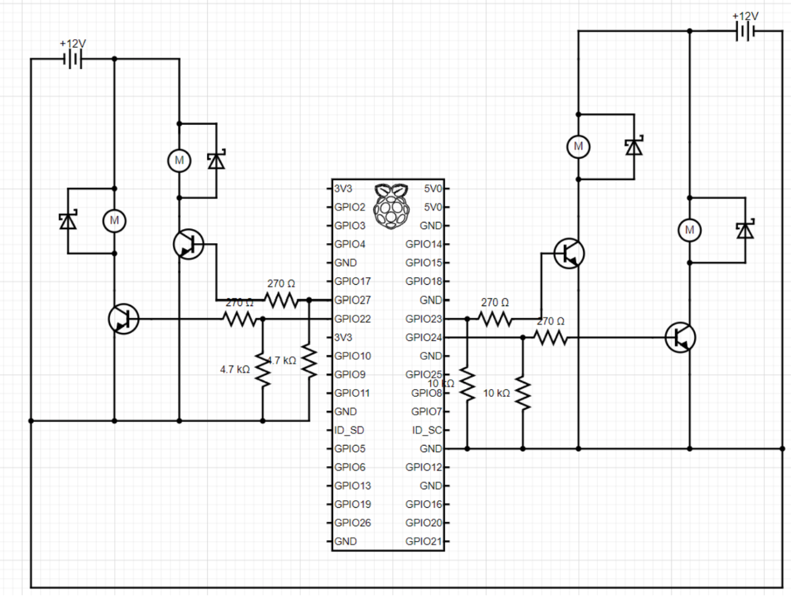
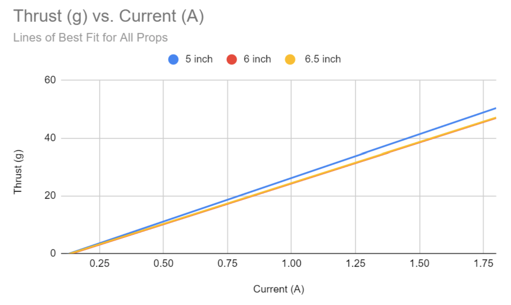

Aerial E-Waste Detection System
The full presentation for this project and further documentation from our four-person team's drive can be seen below:
The Aerial E-Waste Detection System is a prototype drone-based waste scanning system aimed at aiding people who scavenge for valuable waste in landfills in Bangladesh. By providing the location of valuable waste to those who are looking for it, we can provide value by decreasing the amount of time they have to spend in hazardous conditions as well as increase their ability to make money.
The prototype's structure is made of a 3D printed PLA central grommet for a test stand with 4 FEA-tested balsa wood arms, each with a friction-fit motor mount (this would come in handy when we burned a few of the motors). Our mobility came from four small ROB-11696 DC hobby motors controlled by custom motor controlling circuits (Darlington Transistors and Diodes) and powered by two 12V 5A DC power supplies. The diagram for this setup.
The resin propellers for these motors were chosen through extensive thrust testing, maximizing the thrust provided while staying below the motor burning current of around 2 Amps. They were also press-fit and epoxied to the mounting end of the motors. Some data can be seen below.
 The flight of this system can be seen below: